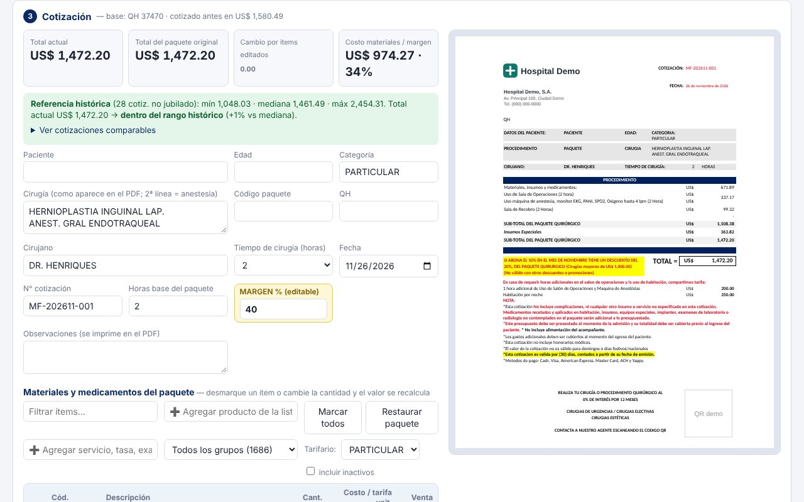
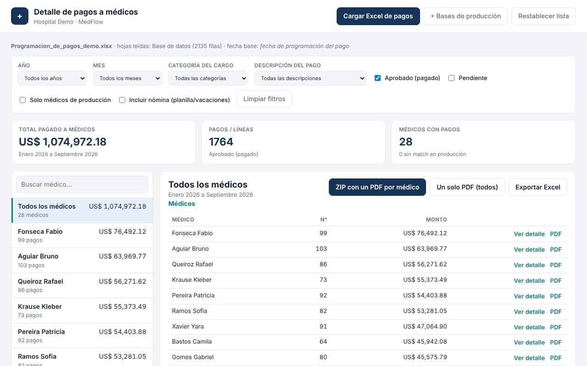

Ferramentas
Cada uma abre já com dados de demonstração (fictícios). Todas rodam inteiras no navegador, sem servidor e sem cadastro. Dá para trocar pelos seus próprios arquivos.

Estado de conta por pagador
Gera o estado de conta de cada seguradora a partir do contas a receber, com envio, antiguidade e histórico.
- Problema
- montar o extrato de cada pagador era manual e propenso a erro.
- Solução
- carrega a base, cruza datas e gera PDF/CSV por seguradora.

Gerador de orçamento cirúrgico
Monta orçamentos a partir de pacotes e itens, com margem, desconto e validade.
- Problema
- cada orçamento saía de um jeito, sem padrão de margem.
- Solução
- pacotes padronizados, preço por custo + margem e PDF para o paciente.

Supply: estoque e ordens de compra
Painel de consumo e dias de estoque, mais um gerador de ordens de compra por fornecedor. Duas abas, uma só página.
- Problema
- ruptura e excesso de estoque sem visão única do consumo.
- Solução
- semáforo de cobertura, lista de compra sugerida e ordens prontas.

Forecast do P&L
Projeta o fechamento do mês em curso para custos e gastos, com premissas e comparação com o orçamento.
- Problema
- o resultado do mês só aparecia depois do fechamento.
- Solução
- forecast por conta com histórico, fixo e variável e exportação para Excel/PDF.

Extrato de pagamentos a médicos
Consolida os pagamentos por médico, com filtros por período e categoria e PDF individual.
- Problema
- conferir honorários exigia filtrar planilhas manualmente.
- Solução
- agrupa por médico, separa aprovado e pendente e gera PDF/ZIP.